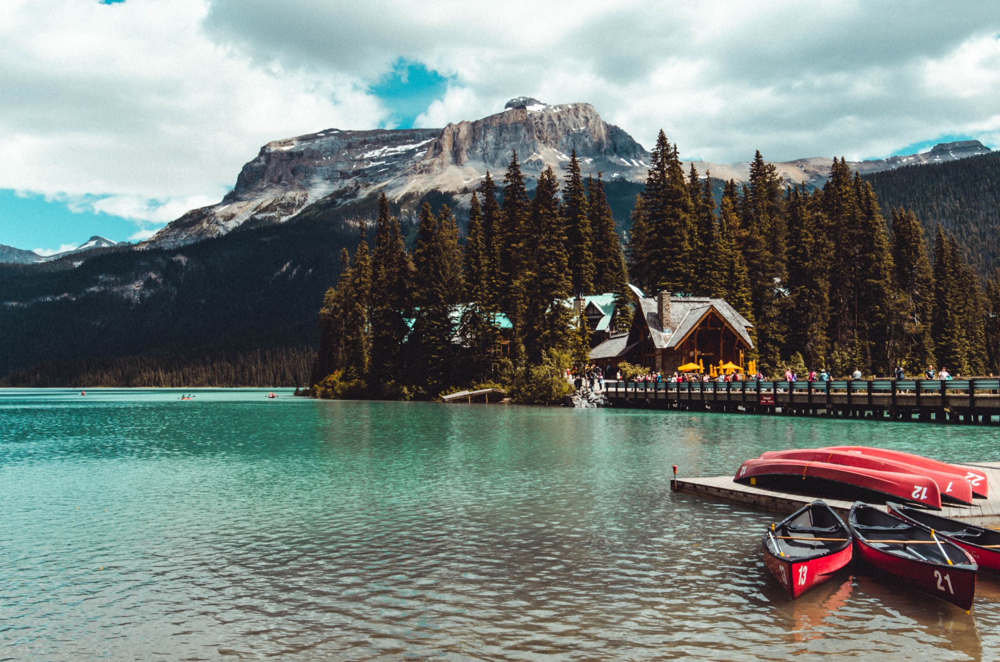

Naturaleza
NaturalezaALBERTA · OESTE DE CANADÁ
Banff y Lake Louise
Lagos turquesas, picos rocosos y senderos entre paisajes alpinos inolvidables.
Planear visita ↗
✦ UN PAÍS, MIL MARAVILLAS
Montañas majestuosas, ciudades llenas de vida y paisajes que parecen sacados de un sueño. Tu próxima aventura comienza aquí.
Descubrir destinos ↓BIENVENIDO A CANADÁ
Desde lagos cristalinos y bosques infinitos hasta barrios históricos y ciudades cosmopolitas, Canadá tiene una experiencia para cada viajero.
TU PRÓXIMA AVENTURA
Busca tu próximo lugar favorito.
NaturalezaLagos turquesas, picos rocosos y senderos entre paisajes alpinos inolvidables.
Planear visita ↗ Ciudad
CiudadUna ciudad multicultural con arte, gastronomía, barrios interesantes y vistas al lago.
Planear visita ↗ Ciudad y costa
Ciudad y costaOcéano, montañas, parques verdes y una escena gastronómica diversa.
Planear visita ↗ Historia y cultura
Historia y culturaCalles con encanto, arquitectura histórica, cafés y rincones llenos de carácter.
Planear visita ↗ Naturaleza
NaturalezaLa fuerza del agua crea uno de los espectáculos naturales más famosos del país.
Planear visita ↗ Naturaleza
NaturalezaMontañas, lagos y grandes espacios para disfrutar la naturaleza y la vida silvestre.
Planear visita ↗No encontramos destinos. Prueba con otra palabra.

RESPIRA PROFUNDO
Descubre lagos, bosques y montañas que invitan a bajar el ritmo y mirar alrededor.
Explorar parques nacionales ↗UN PAÍS DE POSTALES
Un vistazo a sus paisajes.


ANTES DE SALIR
Una buena preparación ayuda a disfrutar cada momento del viaje.
El clima cambia según la región y la estación. Revisa el pronóstico antes de salir.
Canadá es enorme: calcula distancias y tiempos entre ciudades y parques.
Consulta cierres, alertas, permisos, horarios y condiciones de los senderos.
FUENTES ÚTILES
Confirma los detalles directamente con fuentes oficiales antes de viajar.